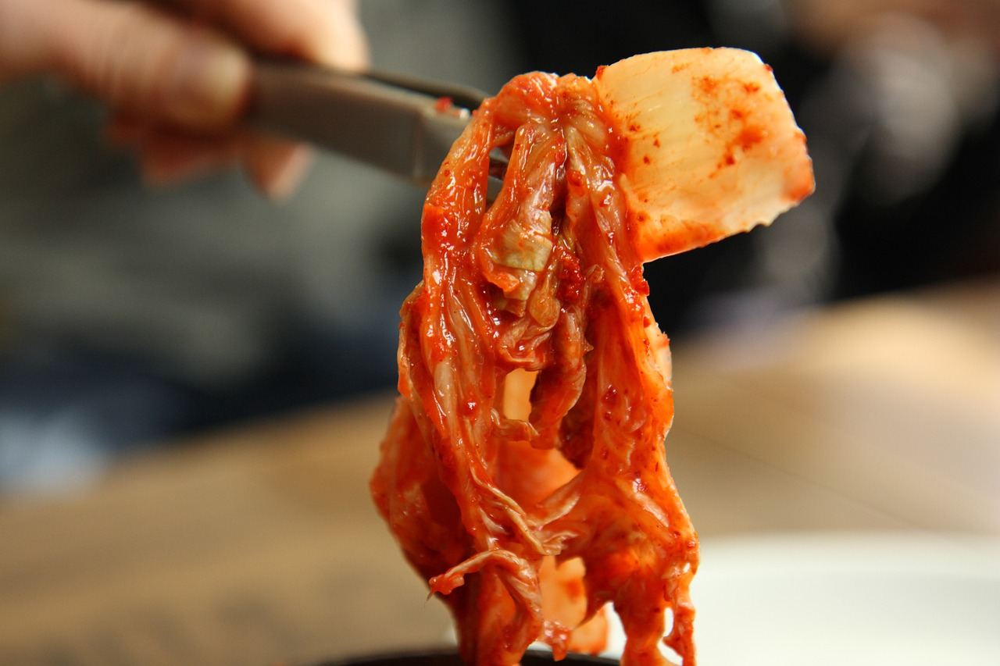

Kimchi Recipe

Description
Kimchi, a staple of Korean cuisine, is much more than just a side dish; it's a cultural icon bursting with flavor and history. Traditionally made from fermented vegetables, most commonly napa cabbage and Korean radishes, kimchi undergoes a meticulous process of salting, seasoning, and fermenting. The result is a vibrant dish that tantalizes the taste buds with its complex blend of spicy, sour, and umami flavors. Beyond its culinary appeal, kimchi holds a special place in Korean culture, symbolizing resilience and resourcefulness. Its preparation and consumption are steeped in tradition often shared during family gatherings and celebrated in festivals like Kimjang, where communities come together to make large batches for the winter months.
Beyond its rich cultural significance, kimchi also offers a myriad of health benefits. Packed with vitamins, minerals, and probiotics, this fermented delicacy supports gut health and boosts the immune system. Its combination of ingredients, including garlic, ginger, and chili peppers, contributes to its antioxidant and anti-inflammatory properties. Additionally, kimchi's fermentation process enhances its digestibility and nutrient absorption, making it a nourishing addition to any diet. As global interest in fermented foods and Korean cuisine continues to grow, kimchi's popularity transcends borders, captivating palates worldwide with its bold flavors and healthful allure.
Ingredients
- Napa cabbage
- Korean radish
- Korean coarse sea salt
- Korean chili powder
- Garlic cloves
- Ginger
- Korean Fish Sauce
- Sugar
- Water
- Carrots
- Asian Chives
- Korean Pear
- Apple
Directions
Prepare the vegetables
- Cut the napa cabbage into quarters, removing the core.
- Rinse the cabbage quarters under cold water, making sure to get between the leaves.
- Cut the Korean radish into thin matchsticks or slices. If using other optional vegetables like carrots or Asian chives, prepare them as well.
Salt the Vegetables
- Sprinkle coarse sea salt between the leaves of each cabbage quarter and on the radish slices.
- Place the salted cabbage and radish in a large bowl or container, and let them sit for 1-2 hours to draw out moisture. Turn them occasionally to ensure even salting.
Rinse and Drain
- After salting, rinse the cabbage and radish under cold water to remove excess salt.
- Drain them thoroughly in a colander for about 30 minutes to remove excess moisture.
Prepare the Kimchi Paste
- In a blender or food processor, combine garlic cloves, ginger, green onions, Korean chili powder (gochugaru), Korean fish sauce (or salted shrimp), and sugar (if using). Blend until you get a smooth paste-like consistency.
- Optionally, you can add Korean pear or apple to the paste for sweetness.
Mix the Vegetables and Paste
- In a large mixing bowl, combine the drained cabbage, radish, and any optional vegetables with the kimchi paste. Use gloves to massage the paste into the vegetables, ensuring they are well coated.
Fermentation
- Pack the kimchi tightly into clean jars or airtight containers, pressing down firmly to remove any air bubbles.
- Leave some space at the top of the container as the kimchi will expand during fermentation.
- Close the containers tightly and let them ferment at room temperature for 1-2 days, depending on how tangy you prefer your kimchi.
- After fermenting, transfer the kimchi to the refrigerator to slow down the fermentation process. It can be eaten immediately but will continue to develop flavor over time.